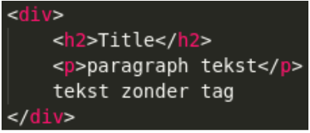

Opdracht 1 Je kunt op 3 verschillende manieren CSS in je HTML inladen.
Op welke 3 manieren kun je dat doen? Leg ook voor elke wijze uit wat het precies inhoud.
Opdracht 2 CSS pas je toe met een bepaalde syntax.
Hoe ziet zo'n syntax eruit? Kun je ook uitleggen wat elk element uit de syntax betekent?
Opdracht 3 Er zijn verschillende selectors, bijvoorbeeld;
type selectors
descendant selectors
class selectors
Maak van de bovengenoemde selectors voorbeelden.
Geef in je antwoord ook aan wat de voordelen zijn van elke selector.
Selectors
Type
bold{background-color: grey;}
Descendant
bold ul li{list-style-type:none;}
Class
.border{border:1px solid black;}
4. Maak een aparte html bestand en voeg de volgende code toe:

Maak het onderstaande na door gebruik te maken van selectors. De kleuren die hiervoor gebruikt zijn is green en darkblue.
Title
paragraph tekst
tekst zonder tag
Opdracht 5 Maak een aparte html bestand en voeg de volgende code toe:
Opdracht 6 Verder heb je ook nog de volgende selectors: ●child selectors ●adjacent selectors ●general selectors Maak in een aparte html bestand voor elke selector een voorbeeld en maak een link in je antwoord naar dat html bestand.
Geef in je antwoord ook aan wat de voordelen zijn van elk selector.
Opdracht 7 Maak nu een html bestand aan met voorbeelden van alle soorten selectors erin. Maak een link in je antwoord die naar dat html bestand verwijst. 5